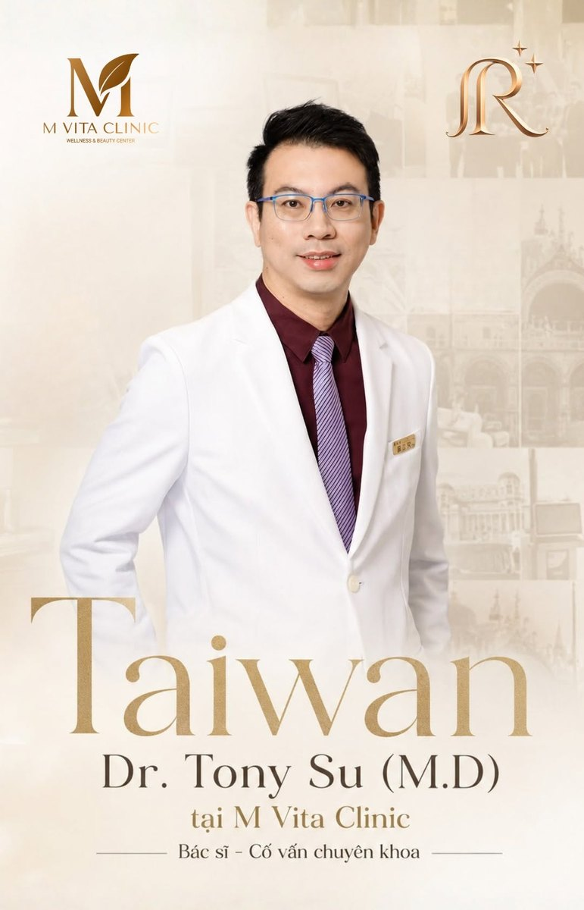

Cooperation · Ho Chi Minh City ·
M VITA Clinic opens in Ho Chi Minh City
A new cooperating wellness clinic in central Ho Chi Minh City — standing beside our existing HCM partner and widening the network of physician-led rejuvenation care in the region.
A new home for wellness in the city
M VITA Clinic — Phòng Khám Trẻ Hóa & Tái Tạo Toàn Diện, a comprehensive rejuvenation & regeneration clinic — opened its doors on 3/2 Street in central Ho Chi Minh City on 11 September 2026, in front of guests, patients and partners.
The clinic is positioned as a Wellness & Beauty Center, with a medical-standard dermatology practice and a physician-led approach to whole-body rejuvenation. Its founding team brings more than ten years of clinical experience in the field.
What M VITA offers on day one
The clinic opens with a considered wellness menu — magnetic-wave therapy, hyperbaric oxygen, active-healthcare programmes and targeted work for headache, neck and spine, and everyday recovery. A complimentary wellness assessment is offered to introduce the space to new visitors.
The interior follows the same visual language that patients across our network will recognise — warm gold, calm neutrals and quiet lighting, chosen so that clinical work happens in a room that already feels considered.
What it means for R2-IWAA
M VITA joins us as a cooperating clinic in Ho Chi Minh City, alongside our existing partner care already offered in the city. The two settings serve different neighbourhoods and different patient needs; together they widen the map of places a patient can be seen without leaving the region.
Dr. Tony Su joins M VITA as a visiting specialist consultant — bác sĩ cố vấn chuyên khoa — supporting the clinic’s founding physicians on regenerative and anti-aging programmes.
As with every location we cooperate with, availability of individual therapies is confirmed at consultation and differs by site. The IV programme and materials standards authored in Taipei remain the reference; local teams apply them to the room they run.
Gallery
From the opening


Photographs courtesy of M VITA Clinic.
Visit
M VITA CLINIC · Wellness & Beauty Center
- Address
- 572A Đường 3/2, Phường Diên Hồng, Ho Chi Minh City, Vietnam
- Hours
- Monday to Sunday, 09:00 – 20:00
- Hotline
- +84 90 569 8888
- Website
- mvitaclinic.vn
Next step
One to one
Every plan begins with a conversation.
A private consultation with our medical team — your history, your goals, and an honest view of what is appropriate for you.
Request a consultation